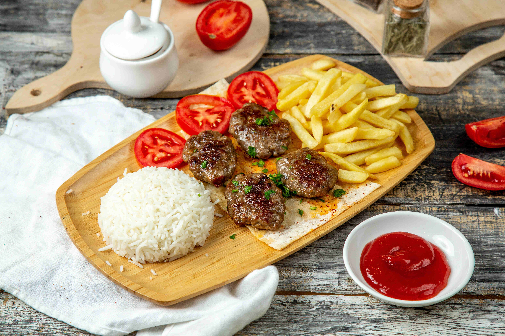

Köfte Tarifi
- 500 gr orta yağlı kıyma
- 1 orta boy rendelenmiş soğan
- 1 diş sarımsak
- 1 adet yumurta
- Yarım çay bardağı galeta unu
- 1 yemek kaşığı sıvı yağ
- 1 avuç ince kıyılmış maydanoz
- 1,5 çay kaşığı tuz
- Yarım çay kaşığı karabiber
- 1 çay kaşığı kimyon

Fettucine Alfredo Tarifi
- 1 adet jülyen doğranmış tavuk göğsü
- 400 gram (bir paket) mantar
- 2 yemek kaşığı sıvı yağ
- 2 dolu yemek kaşığı tereyağı
- 1 paket fettucini makarna
- 2 kutu krema
- 5-6 diş ezilmiş sarımsak
- Tuz, karabiber, fesleğen
- Kaşar peyniri veya parmesan rendesi

Pizza Tarifi
- 5 su bardağı un
- 1 paket instant maya
- 1 yemek kaşığı toz şeker
- Yarım yemek kaşığı tuz
- 4 yemek kaşığı zeytinyağı
- 2 su bardağı ılık su
- 2 su bardağı domates sosu
- 2 yemek kaşığı zeytinyağı
- 1 çay kaşığı kuru fesleğen
- 1 çay kaşığı kekik